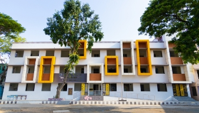

Government Schools

Government schools provide affordable and quality education to students from different backgrounds. They also offer free textbooks, uniforms, mid-day meals and scholarship schemes.
Major Government Schools
- Government Higher Secondary School, Madhavaram
- Government Middle School
- Government Primary School
- Corporation Higher Secondary School